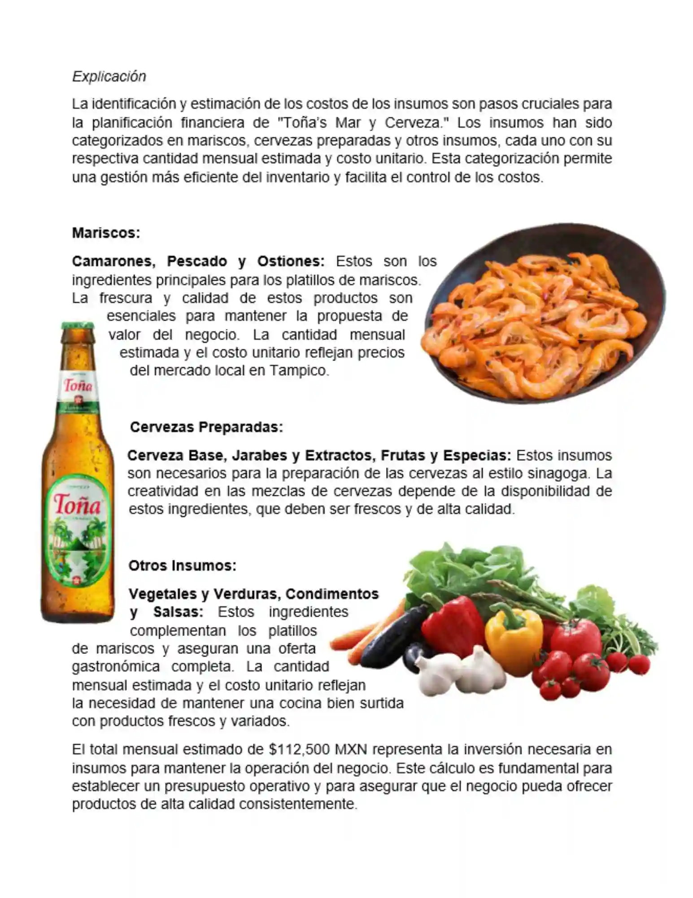
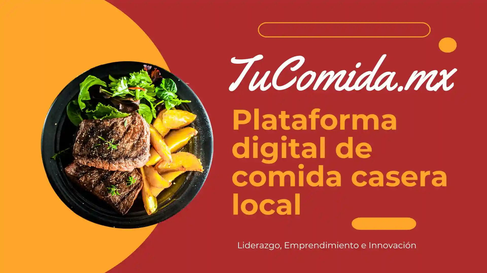
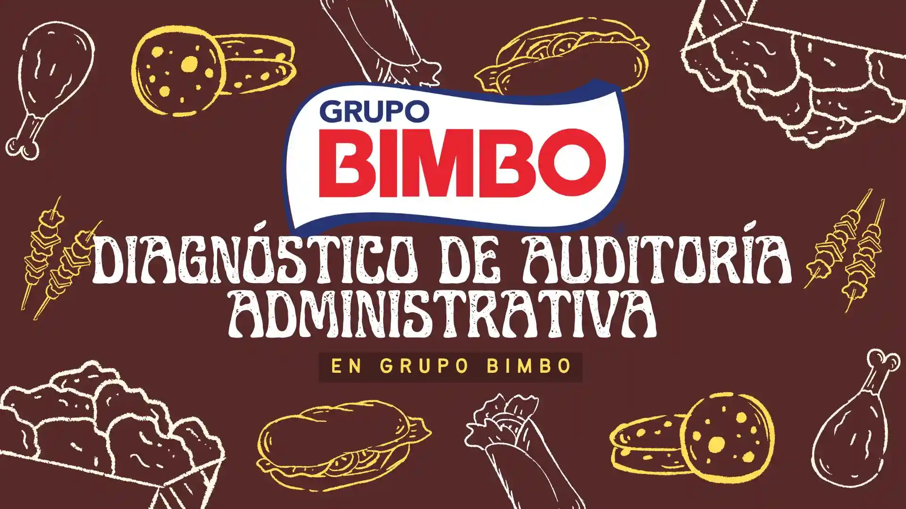

Proyectos finales
Entregables completos al cierre de una materia, con estructura, desarrollo, conclusiones y en muchos casos presentación.
 ¿Qué proyecto necesitas?
¿Qué proyecto necesitas?
Si te dejaron un proyecto universitario y no sabes por dónde empezar, aquí puedes recibir apoyo para organizarlo, estructurarlo y desarrollarlo según lo que te pidió tu maestro o tu materia. Se revisa el alcance, la fecha de entrega, el formato y los apartados necesarios.

Hay proyectos finales muy sencillos y otros que en realidad funcionan como investigaciones completas, diagnósticos, propuestas de mejora, análisis de empresas, reportes técnicos o presentaciones formales. Por eso esta página está más enfocada en explicar ese tipo de entregables.
Entregables completos al cierre de una materia, con estructura, desarrollo, conclusiones y en muchos casos presentación.
Trabajos donde se juntan varios temas o competencias de una unidad, semestre o materia completa.
Documentos académicos con planteamiento, desarrollo, análisis, conclusiones y referencias.
Trabajos enfocados en detectar una problemática y plantear una mejora, estrategia o plan de acción.
Resolución de situaciones reales o simuladas en áreas como administración, finanzas, derecho, psicología, educación o ingeniería.
Diapositivas o materiales visuales para exponer el proyecto frente al grupo o al profesor.
Un proyecto no siempre es solo un documento. En varias materias también te pueden pedir portada, índice, introducción, desarrollo, tablas, anexos, conclusiones y una presentación aparte para exponer.
En otras ocasiones el proyecto requiere investigar una empresa, desarrollar una propuesta, analizar datos, presentar resultados o resolver un caso específico con enfoque académico.
Desarrollo estructurado del proyecto con apartados, redacción clara y orden lógico.
Apoyo con diapositivas para exponer de forma clara el contenido del proyecto.
Dependiendo de la materia, puede incluir tablas, gráficas, comparativos, Excel o interpretación de resultados.
Muchos proyectos finales requieren cerrar con hallazgos, recomendaciones o una propuesta concreta.
Esta sección ayuda a dejar más claro en qué clases o carreras suelen pedir este tipo de trabajos finales o integradores.
En proyectos universitarios es importante ver bien el alcance, porque a veces el profesor pide mucho más de lo que parece en una sola captura. Mientras más completa venga la información, mejor se puede revisar.
Manda la descripción completa, rúbrica, PDF, plataforma o guía de trabajo donde aparezcan los requisitos.
No es lo mismo un proyecto para varios días que uno urgente. El tiempo disponible sí cambia mucho el tipo de apoyo.
Es importante saber si es para licenciatura, ingeniería, maestría o especialidad, y de qué materia se trata.
Si te pidieron índice, capítulos, conclusiones, diagnóstico, propuesta, presentación o anexos, también conviene compartirlo.
Hay materias donde dejan proyectos muy amplios y el problema es que las instrucciones vienen generales o muy cortas. Entonces no queda claro qué desarrollar primero, cuánto debe llevar, qué apartados incluir o cómo presentarlo.
También es común que el proyecto combine varias cosas a la vez: investigación, análisis, propuesta y presentación. Por eso esta página está más enfocada en ese tipo de necesidad.
Aunque muchas personas les dicen “proyecto” a todos por igual, en realidad hay diferencias importantes. Un proyecto integrador suele juntar varios temas de una materia, mientras que un reporte puede ser más corto y una investigación requiere estructura distinta.
También hay proyectos que piden propuestas de mejora, diagnósticos de empresa, análisis financiero, resolución de casos o exposición final. Por eso primero conviene identificar bien qué clase de trabajo te dejaron.




Sí, dependiendo del tiempo disponible, del nivel académico y del tipo de proyecto que se esté solicitando.
Sí. Hay proyectos donde además del documento también se necesita material visual para exponer.
No. También se pueden revisar proyectos de distintas carreras y materias, según el tipo de entregable que pidan.
También se puede revisar, siempre que compartas bien las instrucciones y el alcance real del trabajo.
La mejor forma de revisar un proyecto es compartir la descripción, la rúbrica, la fecha, la materia y todo lo que te haya dado el profesor. Así se puede revisar con más claridad lo que sí se puede trabajar.
Manda instrucciones, capturas, PDFs, rúbrica o apartados del proyecto para revisar disponibilidad.
Enviar mensajeTambién puedes mandar proyectos más extensos por correo si necesitas compartir documentos completos.
Enviar correoSi prefieres otra forma de contacto o quieres ver más contenido, también está disponible la página de Facebook.
Ir a FacebookSi estás buscando apoyo con proyectos universitarios, proyectos finales, integradores, investigaciones o presentaciones académicas, puedes mandar la información y revisar disponibilidad.
Página enfocada en apoyo con proyectos universitarios, proyectos finales, integradores, investigaciones, diagnósticos, propuestas, reportes académicos y presentaciones.
Servicio orientado a estudiantes de licenciatura, ingeniería, maestría y especialidad que necesitan apoyo con trabajos finales o entregables amplios.
Para revisar correctamente un proyecto conviene compartir instrucciones, rúbrica, fecha de entrega, materia, formato y cualquier archivo base o guía del profesor.